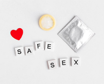

-
Do Excercise
Exercise can help prevent heart disease, stroke, diabetes, and colon cancer. It can help treat depression, osteoporosis, and high blood pressure. People who exercise also get injured less often. Routine exercise can make you feel better and keep your weight under control. Try to be active for 30 to 60 minutes about 5 times a week. Remember, any amount of exercise is better than none.
-
Eat healthy
What you eat is closely linked to your health. Balanced nutrition has many benefits. By making healthier food choices, you can prevent or treat some conditions. These include heart disease, stroke, and diabetes. A healthy diet can help you lose weight and lower your cholesterol, as well.
-
Protect your skin
Sun exposure is linked to skin cancer. This is the most common type of cancer in the United States. It’s best to limit your time spent in the sun. Be sure to wear protective clothing and hats when you are outside. Use sunscreen year-round on exposed skin, like your face and hands. It protects your skin and helps prevent skin cancer. Choose a broad-spectrum sunscreen that blocks both UVA and UVB rays. It should be at least an SPF 15. Do not sunbathe or use tanning booths.
-

Practice safe sex
Safe sex is good for your emotional and physical health. The safest form of sex is between 2 people who only have sex with each other. Use protection to prevent sexually transmitted diseases (STDs). Condoms are the most effective form of prevention. Talk to your doctor if you need to be tested for STDs.
Things to consider

LET'S MAKE YOUR LIFE HAPPIER
In addition to the factors listed above, you should make time for whole body health. Visit your doctors for regular checkups. This includes your primary doctor, as well as your dentist and eye doctor. Let your health benefits and preventive care services work for you. Make sure you know what your health insurance plan involves. Preventive care can detect disease or prevent illness before they start. This includes certain doctor visits and screenings.
You need to make time for breast health. Breast cancer is a leading cause of death for women. Men can get breast cancer, too. Talk to your doctor about when you should start getting mammograms. You may need to start screening early if you have risk factors, such as family history. One way to detect breast cancer is to do a monthly self-exam.
Women should get routine pap smears, as well. Women ages 21 to 65 should get tested every 3 years. This may differ if you have certain conditions or have had your cervix removed.
Minimize Stress
Stress can wreak havoc on our bodies by increasing blood pressure, and putting a strain on our body both mentally and emotionally. It also weakens our immune system and makes us more likely to engage in unhealthy behaviors, such as overeating and cigarette smoking.
Some stress-fighting activities include exercising, meditating, sleeping, laughing, unplugging from technology to relax, and enjoying good conversation with friends.

Stress is an unpleasant component of life. We all experience it from time to time, and we all try to come up with ways to cope – some with more success than others.